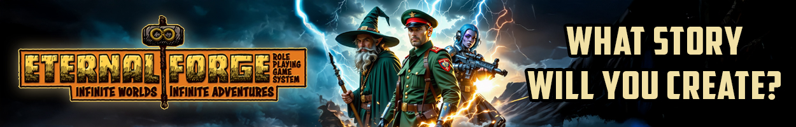
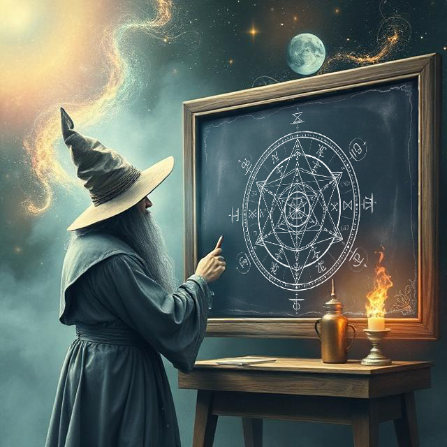
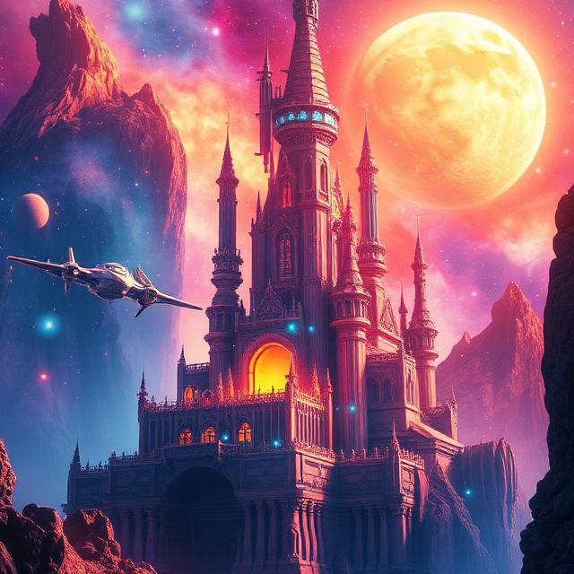
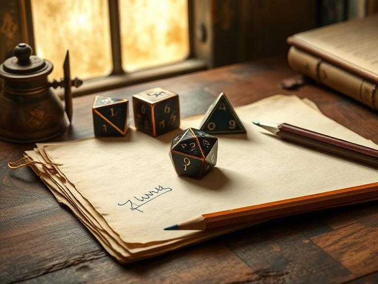

The Eternal Forge RPG System, created by Paul Gioacchini, is a setting-agnostic "rulesmith" toolkit designed for maximum narrative flexibility. Unlike systems tied to rigid classes or specific genres, Eternal Forge provides a streamlined framework that allows Game Masters and players to build highly customized experiences ranging from high fantasy to gritty sci-fi. Its core philosophy centers on "organic" play, where the rules are intended to bend to the needs of the story rather than forcing the story to fit a static set of mechanics.

At the heart of the system is a skill-centric character progression model that prioritizes player creativity over traditional archetypes. Characters are defined by their unique Skills and a set of core Attributes rated on a simple 1–8 scale. The game utilizes a "Core Success Table" to resolve actions, moving away from complex math and cross-referencing charts in favor of a fast, intuitive resolution mechanic. This allows for seamless transitions between roleplay and action, as the GM determines task difficulty based on the specific situation and environmental factors rather than a list of hard-coded modifiers.

Beyond its mechanics, Eternal Forge is built as a collaborative world-building platform. With supplements like the Guildmaster’s Guidebook, the system offers robust tools for "forging" custom skills, unique regional currencies, and tailored lore. This makes it an ideal choice for GMs who enjoy homebrewing their own settings but want a cohesive, professional-grade engine to power them. Whether you are running a quick one-shot or a decade-long campaign, the system scales with your imagination, providing the structure you need without the "crunch" that can slow down gameplay.
Ready to start forging your own epic tale?
Buy Eternal Forge Now